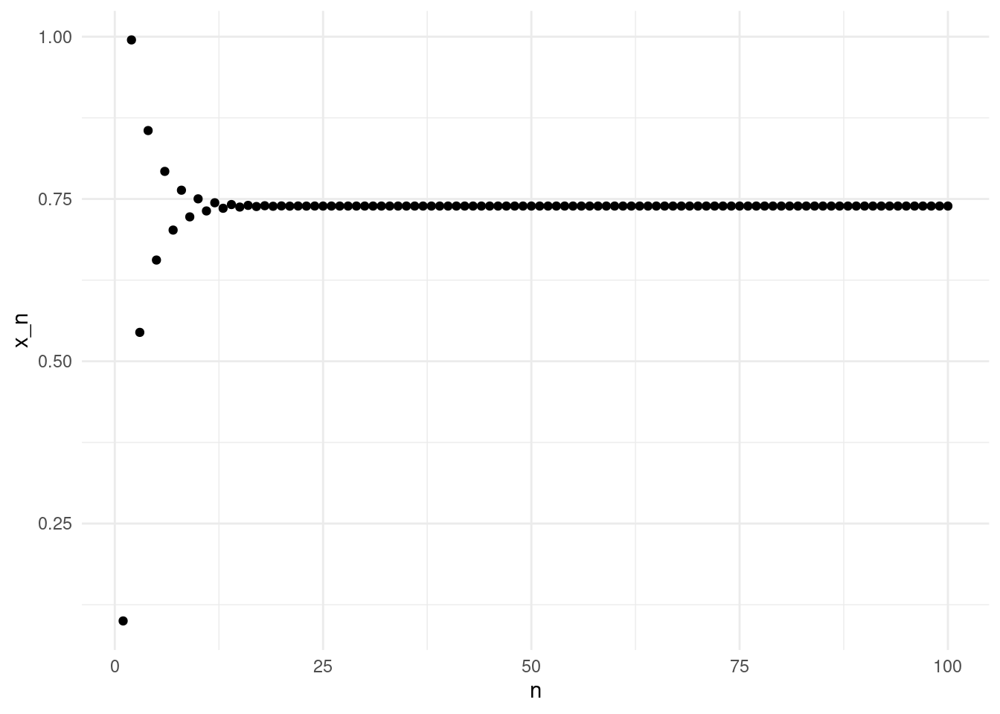
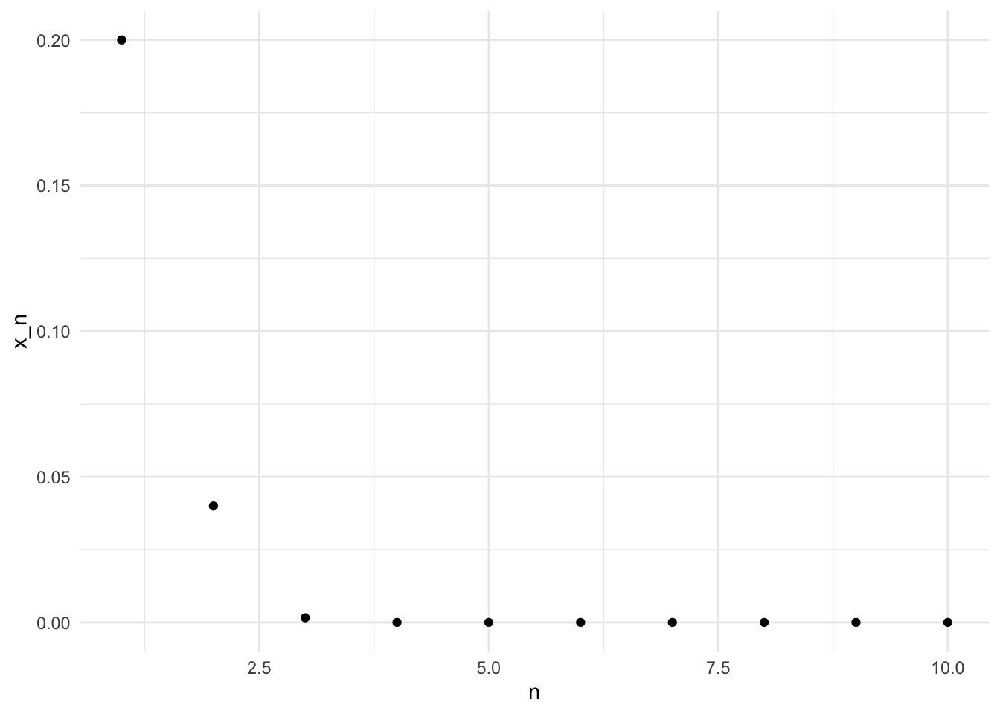
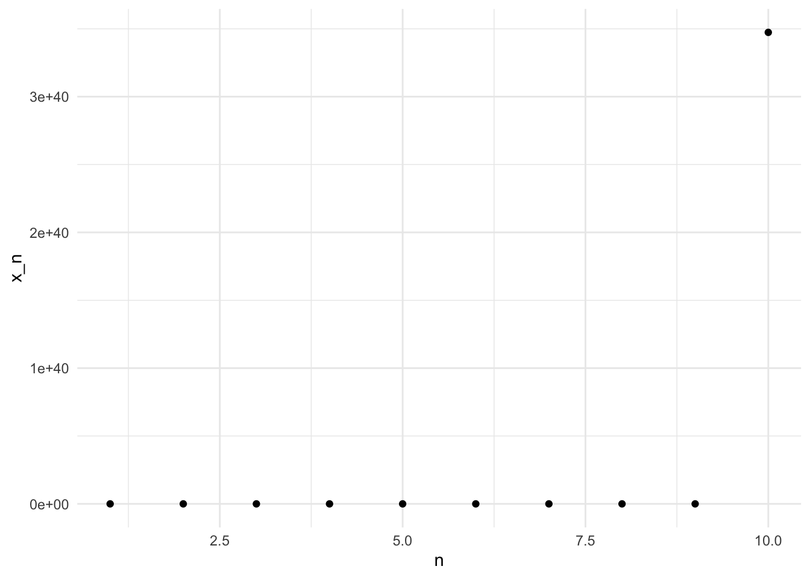

6 Fixed point iteration
Fixed point iteration is both a useful analytical tool, and a powerful algorithm. We will use fixed point iteration to learn about analysis and performance of algorithms, we will cover different implementations and their advantages and disadvantages, and we will look into several basic examples. These algorithms will later be useful in the final project.
6.1 Fixed points
A fixed point is a value that does not change under a given function. More precisely, let \(f\) be a function. A point \(x^*\) is a fixed point of \(f\) if and only if \[ f(x^*) = x^*. \]
Note that we have not indicated the domain or range of the function; this definition is as general as it can be. The examples and applications of fixed points in this module are going to be about real function, e.g. \(f:\mathbb{R}\rightarrow\mathbb{R}\).
Example: \(x=0\) is a fixed point of \(f(x) = 2x\).
Example: For any \(a > 0\), \(x=\sqrt{a}\) is a fixed point of \(f(x) = \frac{1}{2}\left(\frac{a}{x}+x\right)\).
6.1.1 Fixed point iteration
We are interested in finding fixed points of a given function \(f\). To construct an algorithm to find fixed points, we exploit the definition of a fixed point: a fixed point is invariant when we apply the function \(f\). This suggests an iterative algorithm, starting from an initial point \(x_0\), and defining the sequence \[ x_{n+1} = f(x_n). \]
If the sequence \((x_n)_n\) contains a fixed point \(x^*\) of \(f\), then \(x_n\) converges to \(x^*\).
Exercise: Prove the previous statement.
But with the right assumptions, we can actual say more. Assume the sequence \((x_n)_n\) defined above converges to a limit \(x^*\). Then, under suitable assumptions on the function \(f\) we have \[ f(x^*) = f \left (\lim_{n \to \infty} x_n \right ) = \lim_{n \to \infty} f(x_n) = \lim_{n \to \infty} x_{n+1} = x^*. \]
Note that the key step is the second equality. In general, that is only true if \(x\) is continuous. The first and last equalities rely on the assumption that \((x_n)\) converges to \(x^*\); the third equality is the definition of \(x_n\).
This suggests a very simple algorithm to find fixed points of a function \(f\): pick an initial point \(x_0\), and recursively compute \(x_{n+1} = f(x_n)\).
6.1.2 Examples
Let’s start by fixing the number of iterations. Then, a natural implementation of the fixed point algorithm is to use a for loop.
We can check if \(x\) is a fixed point by applying \(f\) again.
We can see that the fixed operation converged to a fixed point. Note that here we fixed the number of iterations; we might be computing too many! We can inspect the convergence visually by plotting the values of \(x_n\).

The values of \(x_n\) oscillate up and down for the first few iterates, but after about 25 iterations the sequence is close to the fixed point.
Exercise: Use the previous example to implement the fixed point iteration for \[ f(x) = \frac{1}{2}\left(\frac{2}{x}+x\right). \] Plot the first 25 iterates.
6.2 Convergence
6.2.1 Initial point and convergence
The fixed point iteration \(x_n\) may not converge. The sequence is characterised by the function \(f\) and the initial point \(x_0\). Both impact the convergence of the sequence. Some functions \(f\) do not have a fixed point, for example \(f(x) = e^x\). Other functions have a fixed point, but the convergence of the fixed point iteration depends on the initial point \(x_0\), for example \(f(x) = 2x\).
Let’s look at another example. Consider \[ f(x) = x^2. \]
The following plot depicts the first ten fixed point iterations with the initial value \(x_0 = 0.2\)

And here is the fixed point iteration for the same function, now using \(x_0 = 1.2\).

Note the \(y\)-axis scale in the last plot! With \(x_0=1.2\), at the tenth iterate the value is above \(10^{40}\). In contrast, with \(x_0=0.2\) the fixed iteration converges quickly to zero.
Exercise: What is the exact expression of the \(n-th\) fixed point iteration of f(x) = x^2$? Can you come up with a criterion to decide when will the sequence converge, depending on \(x_0\)?
6.2.2 Convergence criterion
Computing a fixed number of iterations is not a good strategy. We have seen in the examples above that sometimes the sequence converges in just a few iterates. In consequence, computing further iterations does not provide a better estimate of the fixed point. Ideally, we would like to stop the iteration when we are close to the fixed point. We could fixed a threshold \(\varepsilon > 0\), and stop the iteration when we are closer than \(\varepsilon\) to the fixed point, \[ | x_n - x^* | < \varepsilon. \]
However, we cannot implement this criterion. Remember, the aim of the fixed point iteration is to estimate the fixed point \(x^*\). But to implement this criterion, we need to know \(x^*\) in advance. But if we already have \(x^*\), we do not need to do any iteration!
For real functions, we can use the Cauchy completeness of the real numbers to implement an alternative convergence criteria. Remember that in the real numbers, a sequence is convergent if and only if the sequence is Cauchy, that is, if terms of the sequence become arbitrarily close to each other as the sequence progresses. In particular, if a sequence is convergent, consecutive terms become close.
Note: to be rigorous, a sequence can have consecutive terms becoming arbitrarily close and yet not converge (e.g. $a_n=). This means that checking consecutive terms provides a necessary but not sufficient condition. However, it works well in practice.
Let’s see how to implement this in practice. Now that we have a criterion to stop the iteration, we can use a while loop instead of a for loop.
R
# Define our function f (cosine).
f <- function(x) cos(x)
# Our threshold for stopping.
eps <- 1.e-8
# Define initial point x_0.
x <- 0.1
# Compute the first iterate,
# so we can evaluate the stopping criterion.
x1 <- f(x)
while(abs(x-x1) > eps){
x <- x1 #Replace x by the next iteration x1.
x1 <- f(x) #Compute the next iteration
}
# Show x1. Note that the latest iteration is now x1.
x1 ## [1] 0.7390851Python
# Importing the numpy module
import numpy as np
# Define our function f (cosine).
def f(x):
return np.cos(x)
# Our threshold for stopping.
eps = 1.e-8
# Define initial point x_0.
x = 0.1
# Compute the first iterate,
# so we can evaluate the stopping criterion.
x1 = f(x)
while abs(x-x1) > eps:
x = x1 #Replace x by the next iteration x1.
x1 = f(x) #Compute the next iteration
# Show x1
x1 ## 0.7390851365828572Here, we have computed iterates until the distance between two consecutive iterations was less than \(\varepsilon=1-^{-8}\). However, this implementation is dangerous. What would happen if we apply it for an initial value or a function \(f\) for which the fixed point iteration does not converge? It would never end!
When we implement stopping criteria, we need to ensure that the criteria will eventually be satisfied. For fixed point iterations, as for many other iterative schemes, the safest option is to limit the number of iterations. To do so, we can keep track of how many iterations we have performed in a variable \(it\), and stop the iteration if the number of iterations exceeds a given number. Look at the following implementation:
R
# Define our function f (cosine).
f <- function(x) cos(x)
# Our thresholds for stopping.
eps <- 1.e-8
itmax <- 100
# Define initial point x_0.
x <- 0.1
# Compute the first iterate,
# so we can evaluate the stopping criterion.
x1 <- f(x)
it <- 0 # Iteration counter
while(abs(x-x1) > eps & it < itmax ){
x <- x1 #Replace x by the next iteration x1.
x1 <- f(x) #Compute the next iteration
it <- it + 1 #Update counter
}
#Print number of iterations:
print(paste("Iterations: ",it))## [1] "Iterations: 46"## [1] 0.7390851Python
# Importing the numpy module
import numpy as np
# Define our function f (cosine).
def f(x):
return np.cos(x)
# Our threshold for stopping.
eps = 1.e-8
itmax = 100
# Define initial point x_0.
x = 0.1
# Compute the first iterate,
# so we can evaluate the stopping criterion.
x1 = f(x)
it = 0 # Iteration counter
while abs(x-x1) > eps and it < itmax:
x = x1 #Replace x by the next iteration x1.
x1 = f(x) #Compute the next iteration
it = it + 1
print("Iterations: {}".format(it))## Iterations: 46## 0.7390851365828572We can see that it takes 46 iterations to satisfy the stopping criteria. Since we set the maximum iterations itmax at 100, this means that the distance between consecutive iterates is smaller than eps.
6.3 Fixed point theorems
This section cover some theory about fixed points.
We have seen how to implement the fixed point iteration, and how to implement stopping criteria to ensure our algorithm does not run forever. However, we know that for some functions, and depending on the initial point \(x_0\), our fixed point iteration will not converge. Would not it be nice to have some results to figure out when the sequence actually converges? And even better, to know how long it will take to converge?
Fixed point theorems are results about the existence and uniqueness of fixed points. There are many fixed point theorems, depending on the assumptions we make on the function \(f\). The general form of a fixed point theorem is as follows:
“Theorem”: Let \(f:X \to X\) be a function satisfying . Then, there exists \(x^*\in X\) such that \(f(x^*)=x^*\).
Here \(X\) can be many different types of spaces, and the properties required to ensure the existence of a fixed point will relate to the type of space. For example, in topology we have the Brouwer fixed point theorem (continous function on compact convex sets); in algebra we have Kleene fixed point theorem (order preserving functions on a complete lattice); in analysis, we have the Banach fixed point theorem (contraction mappings on a metric space).
Here, we will discuss briefly a version of Brouwer and Banach fixed point theorems for real functions.
6.3.1 Existence of fixed points
For real funcions, we can state a simple existence result.
Proposition: Let \(f:[a,b] \to [a,b]\) continuous, then \(f(x)=x\) has at least one solution on \([a,b]\).
Exercise: Use the intermediate value theorem to prove the proposition. Hint: Define \(g(x) = f(x) - x\).
6.3.2 Uniqueness of fixed points
The previous proposition ensures that a fixed point exists, but often we are also interested in knowing that the fixed point is unique. We will use another results that you might know from MATH113, the contraction mapping theorem.
First, a couple of definitions.
Definition (Lipschitz function): A function \(f:[a,b] \to \mathbb{R}\) is called a Lipschitz function if there exists some \(k \in [0,\infty)\) such that, for all \(x,y \in [a,b]\), \[\begin{equation} |f(x)-f(y)| \leq k|x-y|. \end{equation}\] We call \(k\) a Lipschitz constant.
Definition (contraction mapping): A contraction mapping is a Lipschitz function \(f:[a,b] \to [a,b]\) with Lipschitz constant \(k<1\). Note that all Lipschitz functions are continous (why?), but the reverse is generally not true. However, as a continous function from \([a,b]\) to itself, we already know that the function has (at least) one fixed point.
6.3.2.1 Checking if a function is a contraction mapping
Computing the Lipschitz constant is difficult if we do not impose further restrictions. If we ask a little more about \(f\), namely that \(f\) is differentiable, then we can use the mean value theorem to find a Lipschitz constant of \(f\). More precisely, assume that \(f\) is differentiable and \(f'(x)\) is bounded in \([a,b]\) (that is, there exists \(\rho\in\mathbb{R}^+\) such that for all \(x\in [a,b]\) \(|f'(x)| \leq \rho\)). Then, by the mean value theorem, for every \(x,y \in [a,b], x<y\), there exists some \(c \in [x,y]\) such that \[ |f(x)-f(y)| = |f'(c)||x-y|, \] and using the bound on \(f'\), we have \[ |f(x)-f(y)| = |f'(c)||x-y| \leq \rho |x-y|. \] Therefore \(\rho\) is a Lipschitz constant for \(f\).
To check if a function is a contraction mapping, it is enough to show that its derivative is bounded by \(\rho < 1\).
We can now state the contraction mapping theorem.
Theorem (contraction mapping): Let \(f:[a,b] \to [a,b]\) be a contraction mapping with Lipschitz constant \(k\). Then there is exactly one fixed point, \(x^*\), of \(f\) on the interval \([a,b]\). Furthermore, for any \(x_0\in [a,b]\) the fixed point iteration \(x_{n+1} = f(x_{n})\), \(n=1,2,\dots\), satisfies \[\begin{equation} |x^* -x_n| \leq |b-a| k^n. \end{equation}\]
Exercise: Prove the contraction mapping theorem. Hints: to prove uniqueness, assume there are two fixed points and apply the definition of contraction mapping; to prove the inequality, note that \(|x^* - x_n| = |f(x^*) - f(x_{n-1})|\), and apply the definition of Lipschitz function.
Note that this theorem gives as more than uniqueness: it tells us how close we are to the fixed point, even if we do not know the fixed point! We can use this result to estimate how many iterations are needed to achieve a desired approximation.
Example: Consider the function \(f:[0,1/3]\rightarrow [0,1/3]\), \(f(x) = x^2\). We note that \(f\) is a contraction mapping, since \(|f'(x)| = |2x| \leq 2/3 < 1\) for \(x \in [0,1/3]\). A Lipschitz constant for for \(f\) is \(k = 2/3\). The contraction mapping theorem tells as that there is a unique fixed point, and that \[ |x^* - x_n| \leq \frac{1}{3} \left(\frac{2}{3}\right)^n. \] Let’s assume that we are interested in finding the fixed point with an error less than \(\varepsilon\). We can impose \[ \frac{1}{3} \left(\frac{2}{3}\right)^n \leq \varepsilon, \] and find \[ n \geq \frac{\log(\varepsilon) - \log(1/3)}{\log(2/3)}. \]
Note that we can do this in general: \[ n \geq \frac{\log(\varepsilon) - \log(|b-a|)}{\log(k)}. \]
Let’s apply this result to run the fixed point iteration for this function using a for loop.
R
# Define our function f (cosine).
f <- \(x) x^2
# Define initial point x_0.
x <- 0.1
# Fixed desired error
eps <- 1.e-1
# Compute number of iterations (next integer)
N <- ceiling((log(eps) - log(1/3))/log(2/3))
for(i in 1:N){
x <- f(x)
}
# Show x.
x ## [1] 1e-08Python
# Importing the numpy module
import numpy as np
# Define our function f
f = lambda x: x**2
# Define initial point x_0.
x = 0.1
# Fixed desired error
eps = 1.e-1
# Compute number of iterations (next integer)
N = int(np.ceil((np.log(eps) - np.log(1/3))/np.log(2/3)))
for i in range(N):
x = f(x)
# Show x.
x ## 1.0000000000000008e-08In this case, we know that the exact value of the fixed point is \(x^* = 0\). We can see that after N iterations, the value of \(x_N\) is less than eps as expected. Note that the estimate for \(N\) was far to large, we are getting a much lower error that what is ensured by the error bound. However, the error also depends on the initial point \(x_0\). Try running the iteration with \(x_0 = 1/3\), for example.
6.4 Exercises
Exercise: We have seen how to implement a stopping criterion based on the absolute difference between consecutive iterates. Sometimes, if a function takes large values, that criterion may take too long to be satisfied. Implement another stopping criterion based on the relative difference, \(|(x_{n+1} - x_n)/x_n| < \varepsilon_r\). Implement it together with the absolute value criterion, and the bound on the maximum number of iterations.
Exercise: Implement a function recursive_fixed_point that takes a
function f, a point x and an absolute tolerance eps, and runs the fixed
point iteration recursively (that is, calling recursive_fixed_point itself
within the function). You should not use any for or while loops.
Challenge: Implement a function recursive_fixed_point that takes a
function f, a point x and an absolute tolerance eps, a relative tolerance
eps_r and a maximum number of iterates itmax and runs the fixed point
iteration recursively (that is, calling recursive_fixed_point itself within
the function). You should not use any for or while loops. The function
should return NA or np.nan if the maximum number of iterations is reached.
Exercise: Apply the contraction mapping theorem to \(f:[0,1]\rightarrow [0,1]\), \(f(x) = cos(x)\). Implement the fixed point iteration using the absolute error criterion. Run the fixed point iteration for 100 equispaced points in [0,1], and compare the number of iterations with the number of iterations given by the contraction mapping theorem.